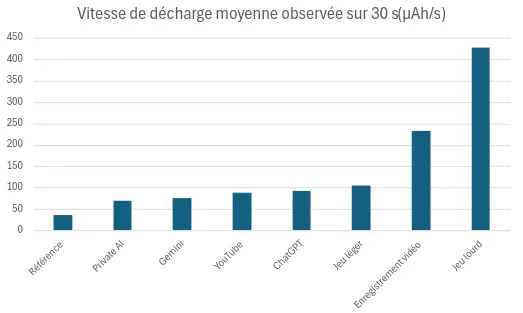
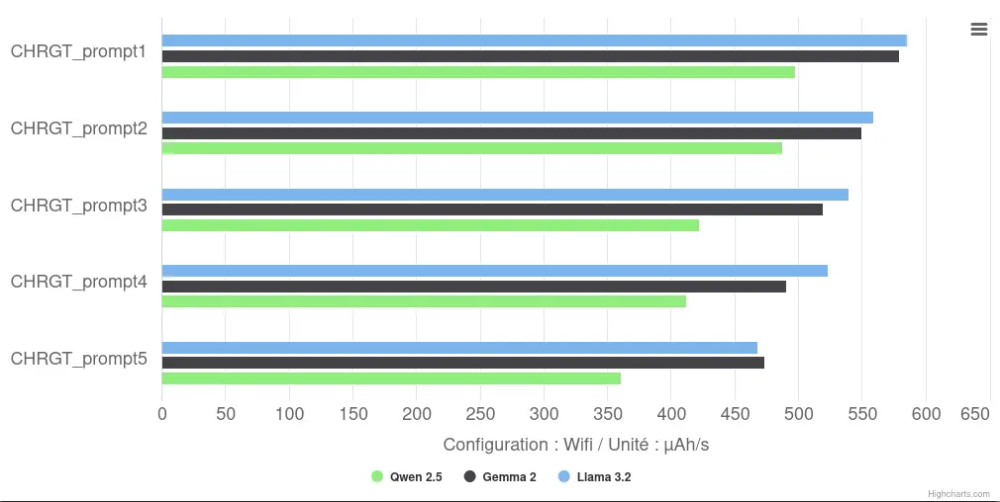
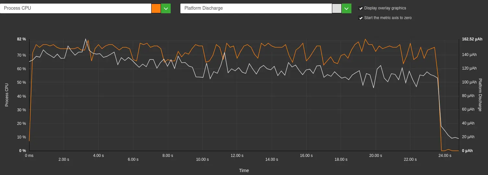
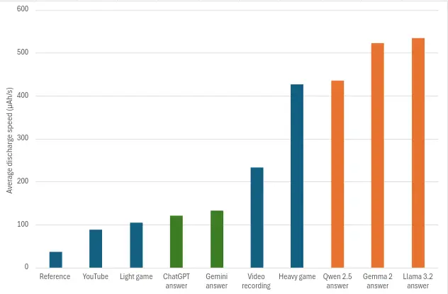

Introduction
Imagine a virtual assistant capable of writing an e-mail, translating a text or solving a complex equation, directly from your phone, without ever sending your data over the Internet. That’s the promise of local AIs like Apple Intelligence, Gemini Nano or Galaxy AI. These models offer undeniable advantages in terms of latency and privacy, but at what price?
Running these algorithms directly on your device requires considerable hardware resources and energy consumption. This computational intensity impacts not only your battery life, but also the lifespan of existing smartphones. So should we be worried about the rise of local AI, even more so than server-based AI?
This article focuses on the energy impact of local AI on our smartphones for a specific use case. It will be followed by complementary analyses of other uses, such as text generation or audio and image processing (object detection, image segmentation, voice recognition…).
With the help of Greenspector Studio, we were able to measure the time and energy used to respond to us for different language models, both local and remote, in order to gauge the impact of this technological forcing1 on our batteries.
Methodology
Measurement context
- Samsung Galaxy S10, Android 12
- Network: off for local model / Wi-Fi for ChatGPT and Gemini
- Brightness: 50 %
- Tests run over a minimum of 5 iterations to ensure reliability of results
- App package local IA: us.valkon.privateai
- Context size: 4096 tokens
- Framework : Llama.cpp
- Hardware preference: CPU
- App package ChatGPT : com.openai.chatgpt
- App package Gemini : com.google.android.apps.bard
Models tested locally (via privateAI) :
- Llama 3.2, Meta, https://huggingface.co/meta-llama/Llama-3.2-1B
- Gemma 2, Google, https://huggingface.co/google/gemma-2-2b
- Qwen 2.5, Alibaba, https://huggingface.co/Qwen/Qwen2.5-7B
For each test, a new conversation was initiated, and then 5 questions (called prompts) were asked of the model:
- You’re an expert in digital eco-design. All your answers will be 300 characters long. What are the three fundamental principles for optimizing performance data consumption and energy in Android applications?
- Develop the first principle
- Develop the second principle
- Develop the third principle
- Conclude our exchange
Response time
One of the determining factors for the user experience is response time. In addition to this, our smartphone won’t be able to go into standby mode, and therefore save energy, while the response is being generated. We were able to measure this response generation time, from the moment the prompt is sent, to the last character of the response. Here are the results for the three models studied:
Local models:
| Models | Number of model parameters | Average response time (s) | Total response time (s) |
| Llama 3.2 | 1,24 billion | 25,9 | 129,5 |
| Gemma 2 | 2,61 billions | 37,9 | 189,5 |
| Qwen 2.5 | 7,62 billions | 54,2 | 271 |
These data highlight a clear trend: the more parameters a model contains, the longer it takes to generate a response. For example, the Llama 3.2 model, with its 1.24 billion parameters, delivers an average response in 25.9 seconds. Qwen 2.5, on the other hand, is much more voluminous, with 7.62 billion parameters, and has an average response time of 54.2 seconds – more than twice as long.
Remote models
While local AI models offer significant advantages, particularly in terms of privacy protection, their speed is far less impressive when compared with models deployed on remote servers:
| Models | Average response time (s) | Total response time (s) |
| Gemini | 4,97 | 24,85 |
| ChatGPT | 5,9 | 29,5 |
The results show a clear superiority of remote models in terms of speed. For example, ChatGPT, hosted on optimized servers, delivers an average response time of just 5.9 seconds, more than four times faster than Llama 3.2, the fastest local model tested. Gemini, with an average response time of 4.97 seconds, confirms this trend.
This difference is not limited to response time. In addition to placing longer demands on our devices, and thus delaying the return to standby, the local execution of AI models also impacts the energy consumption of devices. These response times suggest that response generation places the terminal under an intense workload, and therefore a high battery drain. To better understand this impact, we measured the rate of battery discharge during model response.
Battery discharge speed
For reference, a Samsung Galaxy S10, with brightness at 50%, without wifi and with a black background displayed on the screen, consumes around 36 µAh/s. We have measured other use cases to obtain equivalents. The Galaxy S10 is equipped with a 3,400 mAh battery.
| Average discharge speed over 30 s (µAh/s) | |
| Reference | 36 |
| Open Private AI application, no interaction | 70 |
| Open Gemini application, no interaction | 75 |
| Watching a YouTube video without sound (Rave Crab) | 88 |
| Open ChatGPT application, no interaction | 92 |
| Light game (Subway Surfers) | 105 |
| Video recording | 233 |
| Heavy game (3DMARK Wild Life benchmark) | 427 |

Battery discharge on a Samsung Galaxy S10: Comparison according to use
Here we can see that the ChatGPT application consumes slightly more than the other AI applications, and even more than YouTube. The most consuming uses are video recording and our 3DMARK Wild Life benchmark, which reflects mobile games based on short periods of intense activity, with a resolution of 2560×1440.
Local models
Running AI models directly on a smartphone is not just a question of speed, it also raises questions about energy consumption. Tests show that local models consume a significant amount of energy, directly influencing the autonomy of devices, and indirectly their lifespan. Here are the results observed during answer generation:
| Models | Average observed discharge rate (µAh/s) | Battery discharge (mAh) | Total response time (s) |
| Llama 3.2 | 535 | 69,3 | 129,5 |
| Gemma 2 | 522 | 99 | 189,5 |
| Qwen 2.5 | 435 | 118,1 | 271 |
These figures reveal an interesting trend: although the Qwen 2.5 model is the most demanding in terms of number of parameters (7.62 billion), it has a lower average discharge rate (435 µAh/s) than the Llama 3.2 (535 µAh/s) and Gemma 2 (522 µAh/s) models. However, its total battery discharge over one run remains the highest at 118.1 mAh, due to the longer processing time. From a battery point of view, using a local model is at least as draining as running 3DMARK’s Wild Life benchmark.
With its reference consumption (terminal switched on, black screen background, brightness at 50%, no WiFi), we estimate that our phone’s battery is completely discharged in over 26h. Using these models, it discharges in 2h10min using Qwen 2.5 (i.e. around 143 responses), which will divide your autonomy by 12, 1h48m with Gemma 2 (i.e. around 171 responses), which will divide your autonomy by more than 14 and 1h45min with Llama 3.2 (i.e. around 245 responses), which will divide your autonomy by 15. Using a large local language model will reduce your smartphone’s autonomy by a factor of between 12 and 15.
When we look at the discharge speeds of the various prompts, we see that the latter decreases with each successive prompt. There are several possible explanations for this, such as software optimizations or hardware limitations. However, in the absence of measurement advantages, it is difficult to state with certainty the exact cause of this phenomenon. We’ll come back to these hypotheses in the next article.

Step-by-Step Comparison of Battery Discharge Rates for Local Models
This high battery discharge correlates with very high CPU utilization, as can be seen in the graph below.

Battery discharge (white) and process CPU (orange) on a Samsung Galaxy S10 for a Llama 3.2 response – Greenspector Workshop
Remote models
This impact on the battery is all the more significant when compared with cloud-based models:
| Models | Average observed discharge rate (µAh/s) | Battery discharge (mAh) | Total response time (s |
| Gemini | 132 | 3,2 | 24,85 |
| ChatGPT | 120 | 3,3 | 29,5 |
We can see that for our route, using a remote model discharges our battery between 21 and 37 times less than a local model. We can then load more than 5170 responses from Gemini (i.e. 7h7min) or 4789 responses from ChatGPT (i.e. 7h51min) with a full battery.
On average, our local models consumed 29 times more energy than a ChatGPT response.

Battery discharge on a Samsung Galaxy S10: Comparison according to use
The graph above shows a clear distinction between remote AI models (green) and local models (orange) in terms of energy consumption. Surprisingly, remote models still consume more energy than watching a YouTube video or playing a light game, even though they transmit only a small amount of data and require minimal computation on the device side, apart from the progressive display of text. Local models, on the other hand, show significantly higher energy consumption, exceeding that of all other uses tested, including intensive tasks such as heavy gaming or video recording.
These results highlight the significant energy impact of AI models running locally on smartphones, posing a real challenge for device autonomy as well as battery life in a context of prolonged and recurring use.
Conclusion
As we’ve shown, the privacy gains offered by local AI models are accompanied by a significant impact on energy consumption, due to the intense demands placed on the CPU of our smartphones. Designed to operate in the background without explicit user intervention (automatic responses, e-mail summaries, translations, etc.), these models constantly mobilize the device’s resources, accelerating battery discharge. As batteries are consumable components capable of enduring between 500 and 1,000 full charge/discharge cycles2, this over-consumption of energy leads to premature wear and tear. In the long term, this has a significant ecological impact, with more frequent replacement of the terminal or its battery.
We realize that running a large language model (LLM) locally is not a realistic use case on a large scale. However, the trend adopted by operating system manufacturers and publishers is a cause for concern. Faced with new demands for local AI, they are seeking to compensate for current limitations by increasing the computing power of terminals with dedicated gas pedals and higher-capacity batteries. However, the latency times observed on standard market devices, often deemed “uncomfortable” for the end-user, are likely to precipitate the renewal of smartphones towards higher performance models. A development that could increase the environmental impact of manufacturing new terminals.
Our initial measurements thus indicate that integrating local AI simply shifts the energy footprint from servers to user devices, with potentially heavier environmental consequences than AI running in the cloud.
In the next section, we’ll explore ways of reducing the energy impact of these models by comparing different hardware configurations (presence of a dedicated gas pedal, optimization of architectures) and software. For developers and manufacturers, the challenge will be to strike a balance between power, speed and energy efficiency. Optimizing algorithms to minimize power consumption without compromising response quality could be the key to making these technologies viable on a large scale.
At a time when one in three French people considers a flat battery to be a real phobia3, are we ready to sacrifice our autonomy, accelerate the wear and tear of our batteries, or prematurely change our smartphone while our device is still functional – all in the name of comfort and privacy?
To find out more …
For more information on AI and how it works we recommend https://framamia.org/ . For more information on frugal AI we recommend the resources available here: https://ia-frugale.org/